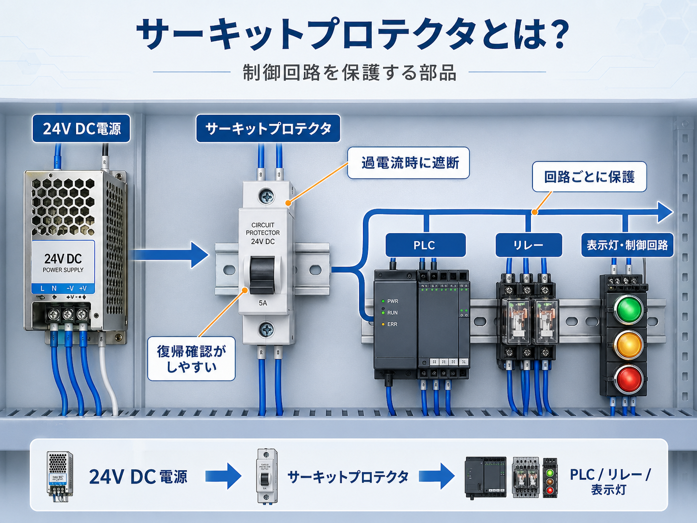
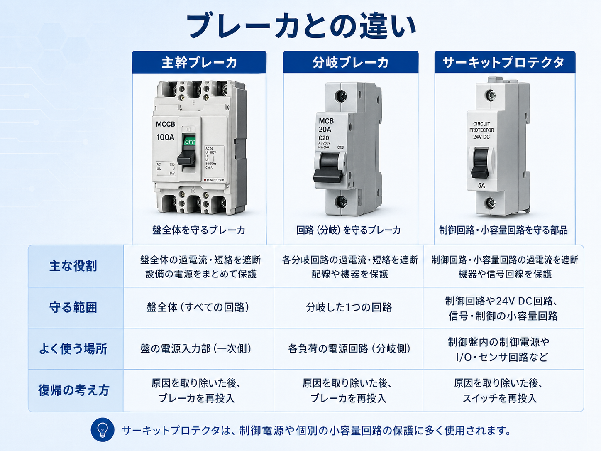
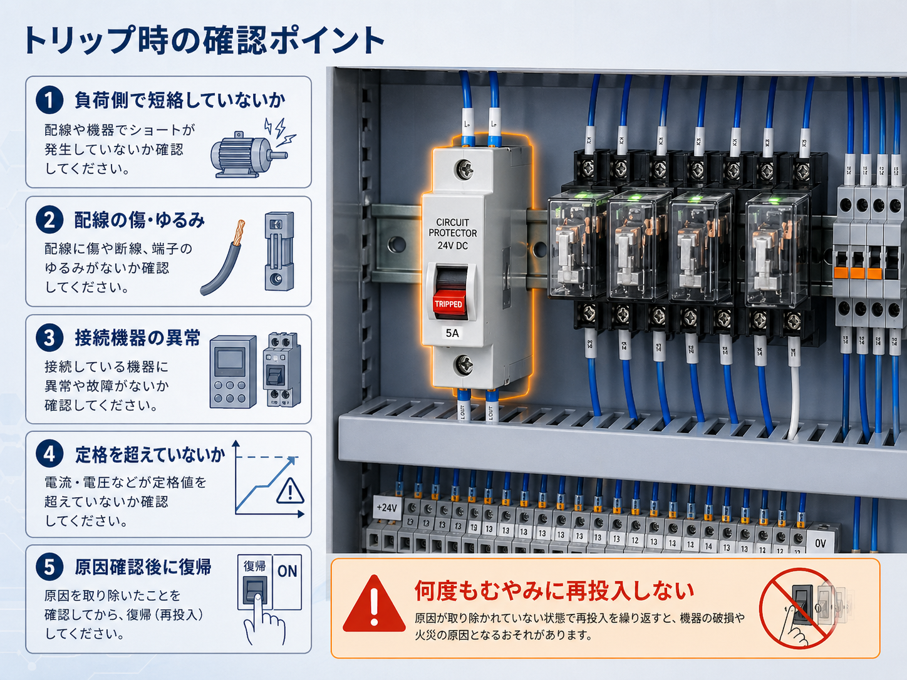

向いている人
- 制御盤内のサーキットプロテクタの役割を知りたい人
- ブレーカとの違いがあいまいな人
- トリップした時の確認順を整理したい人
サーキットプロテクタは、制御盤内の制御電源や小容量回路を保護するための部品です。 ブレーカとの違い、使われる場所、トリップ時の確認ポイントを現場目線で整理します。
サーキットプロテクタは、制御盤内の制御電源や小容量回路を保護するための部品です。 過電流や短絡が起きた時に回路を遮断し、配線や機器を守る役割があります。
主幹ブレーカや分岐ブレーカが盤全体や大きな回路を守るイメージだとすると、 サーキットプロテクタは制御盤内のDC24V回路、PLCまわり、リレー、表示灯、センサー回路などを個別に守るイメージです。
サーキットプロテクタが落ちた時は、負荷側の短絡、配線の傷、機器不良、定格超過などの原因がある可能性があります。 原因を見ずに何度も復帰すると、機器破損や発熱につながることがあります。

先輩サーキットプロテクタは、制御盤の中の小さな回路を守る保護部品だね。

新人ブレーカと同じように見えますが、制御回路用として見ることが多いんですね。

先輩そう。落ちた時は、まず負荷側に異常がないかを見てから復帰するのが大事だよ。
サーキットプロテクタとは、回路に過電流や短絡が発生した時に遮断する保護部品です。 制御盤では、DC24V電源の出力側や、PLC、リレー、表示灯、センサー回路などの保護に使われることがあります。
見た目は小型ブレーカに似ていますが、制御回路や小容量回路を個別に保護する目的で使われることが多いです。 盤内で「どの回路を守っているか」を見るのが大切です。

負荷側に過電流が流れた時に回路を切り、配線や機器を守ります。
配線同士のショートや機器内部短絡が起きた時の保護になります。
制御電源を複数回路に分けて保護すると、トラブル箇所を見つけやすくなります。
落ちた原因を確認せずに再投入を繰り返すと、さらに故障が広がることがあります。
サーキットプロテクタ本体だけでなく、出力側がPLCなのか、リレーなのか、表示灯なのか、センサーなのかを確認すると役割が分かりやすくなります。
制御盤では、24V DC電源のあとにサーキットプロテクタを入れて、その先をPLC、リレー、表示灯、センサー回路などへ分けることがあります。 こうすることで、どこかの回路で異常が起きた時に、影響範囲を小さくできます。
| 保護する回路 | よくある対象 | 見るポイント |
|---|---|---|
| 制御電源 | DC24V電源の分岐先 | どの回路へ24Vを送っているかを見る |
| PLCまわり | PLC入力・出力・周辺機器 | PLC側の電源や信号線に異常がないかを見る |
| 表示・操作回路 | 表示灯、ブザー、押しボタンまわり | ランプや操作部の配線に短絡がないか見る |
| センサー回路 | センサー、スイッチ、I/O機器 | 盤外配線の傷や水濡れ、短絡に注意する |
すべてを1つの保護でまとめるより、回路ごとに分けてある方が、どこで異常が出ているかを切り分けやすくなります。
サーキットプロテクタとブレーカは、どちらも回路を保護する部品です。 ただし、現場での見方としては、主幹ブレーカや分岐ブレーカは比較的大きな電源回路、サーキットプロテクタは制御盤内の小容量回路や制御回路を守るイメージで見ると整理しやすいです。

| 部品 | 守る範囲 | よく使う場所 | 復帰の考え方 |
|---|---|---|---|
| 主幹ブレーカ | 盤全体や大きな電源回路 | 盤の電源入力部、一次側 | 原因確認後、盤全体への影響を考えて復帰 |
| 分岐ブレーカ | 分岐した1つの回路 | 負荷ごとの電源回路 | 分岐先の負荷や配線を確認して復帰 |
| サーキットプロテクタ | 制御回路や小容量回路 | DC24V制御電源、I/O、リレー、表示回路 | 負荷側の短絡や過電流を確認して復帰 |
見た目や呼び名だけで判断せず、その部品の出力側がどこへ行っているかを見ます。 守っている範囲が分かると、トリップ時の確認先も分かりやすくなります。
サーキットプロテクタがトリップした時は、保護部品が異常を検知して回路を切った状態です。 そのため、ただ戻すのではなく、負荷側に短絡や過電流の原因がないかを確認します。

配線や機器内部でショートしていないかを確認します。
盤内配線、盤外配線、端子台まわりの傷・ゆるみ・抜けを確認します。
PLC、リレー、表示灯、センサー、I/O機器などの故障や水濡れを確認します。
負荷が増えて、サーキットプロテクタの定格電流を超えていないか見ます。
銘板や図面で、トリップした回路が何を保護しているか確認します。
原因を確認せずに何度も再投入すると、故障や発熱につながることがあります。

新人落ちていたら、とりあえず戻してみるのは危ないですか？
先輩原因が分からないまま何度も戻すのは危ないね。まずは負荷側の短絡や配線異常を確認してから復帰しよう。
サーキットプロテクタは、定格電流、電圧、AC/DC、遮断特性、極数などを確認して使います。 見た目が似ていても、仕様が違うと正しく保護できない場合があります。
| 確認項目 | 見る理由 |
|---|---|
| 定格電流 | 5A、10Aなど、保護する回路に合った電流値か確認します。 |
| 電圧・AC/DC | DC24V回路なのか、AC回路なのかで選び方が変わることがあります。 |
| 遮断特性 | 突入電流がある負荷では、すぐ落ちない特性が必要な場合があります。 |
| 極数 | 1極、2極など、切りたい線の数に合わせて確認します。 |
| 取付方法 | DINレール取付か、既存盤に合う形かを確認します。 |
よく落ちるからといって定格電流を大きくすると、配線や機器を守れなくなる可能性があります。 原因を確認せずに容量を上げるのは危険です。
サーキットプロテクタは、制御盤内の制御電源や小容量回路を保護する部品です。 DC24V電源、PLCまわり、リレー、表示灯、センサー回路などを個別に守る目的で使われることがあります。
ブレーカとの違いは、名前だけで判断するよりも「何を守っているか」で見ると分かりやすいです。 主幹ブレーカは盤全体、分岐ブレーカは分岐回路、サーキットプロテクタは制御回路や小容量回路の保護として整理できます。
トリップした時は、負荷側の短絡、配線の傷、接続機器の異常、定格超過を確認してから復帰します。 原因を見ずに何度も再投入しないことが大切です。